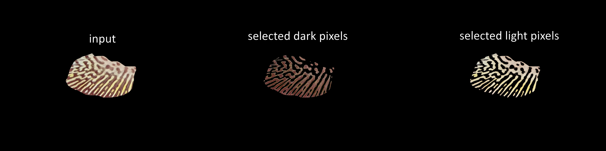
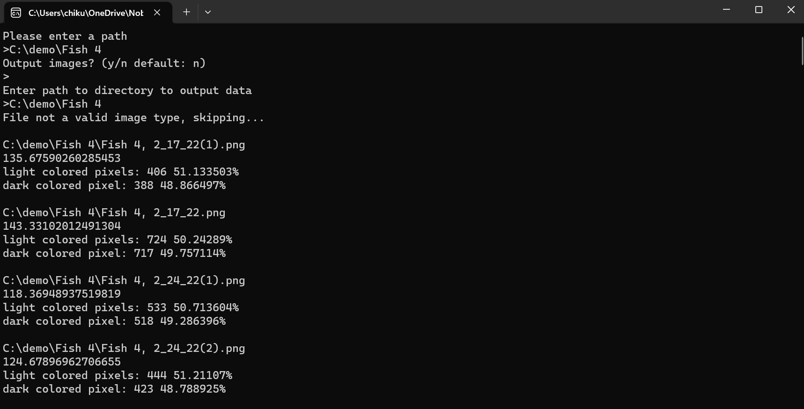
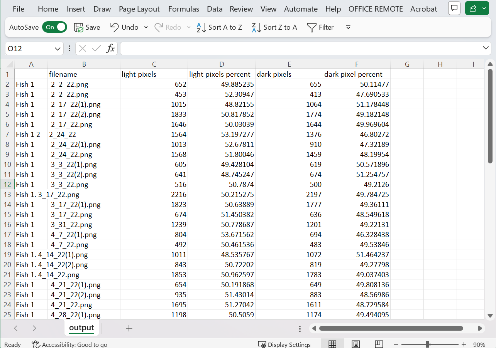
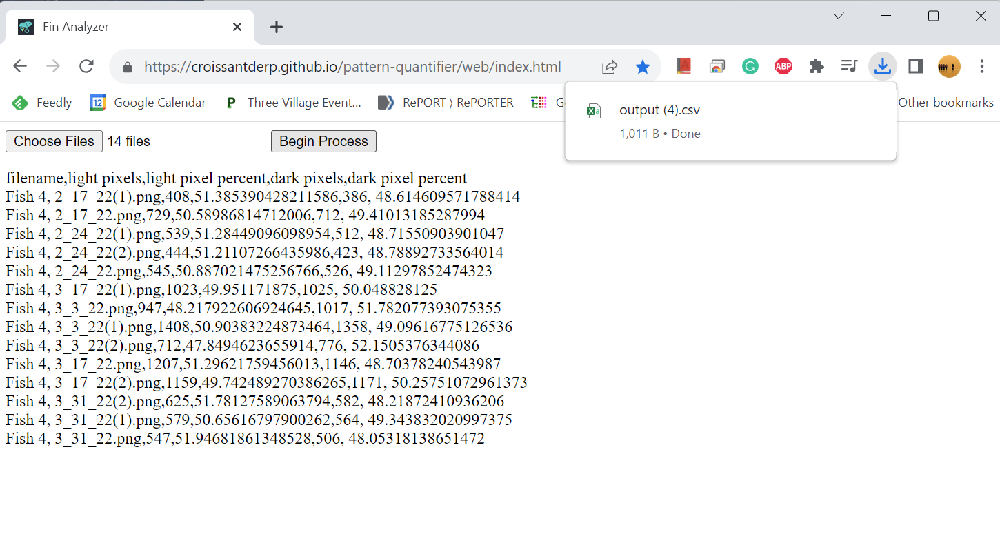
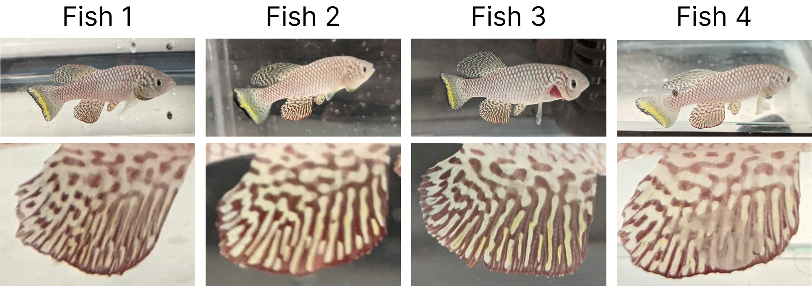
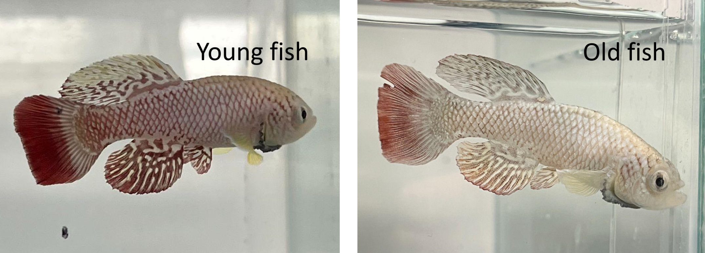
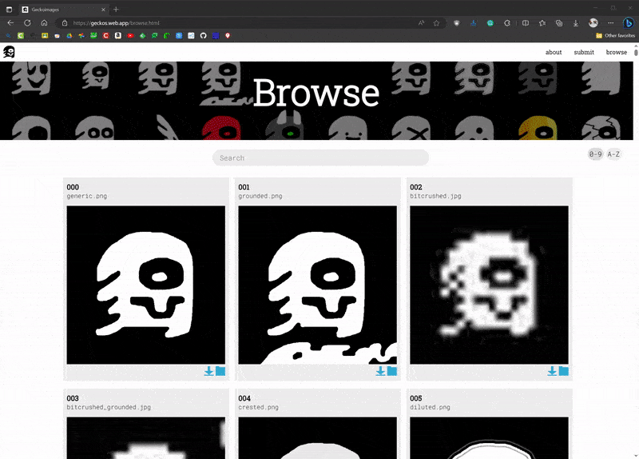
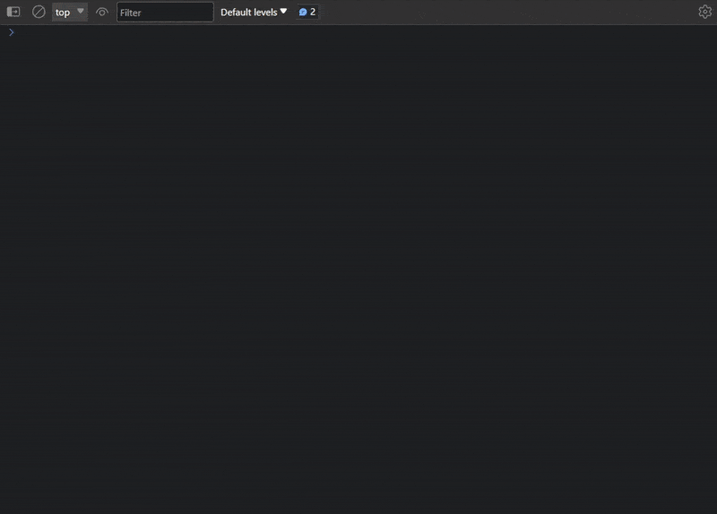
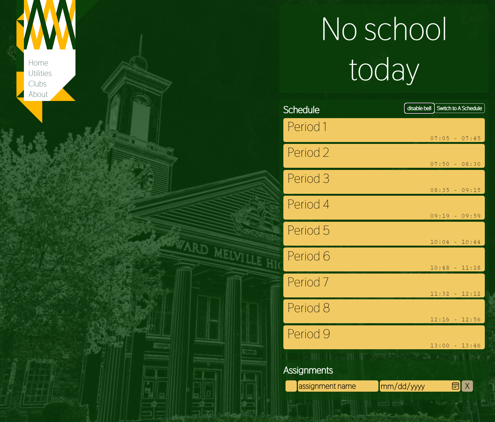
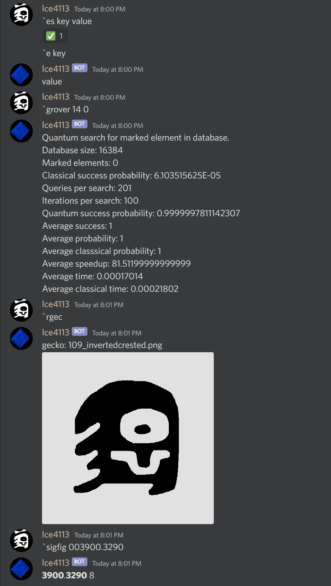

Engineering
CompSci
Art
Activities
Engineering
CompSci
Art
Activities
I first learned how to code using Unity in 9th grade, making video games during the pandemic. I have been an active member of the United Computations Club at Gunn, and an organizer for their annual GunnHacks hackathon since 10th grade. I also have been participating in the Computer Science Club at Ward Melville.
Currently, I am familiar with, in order of competence: C#, Unity, C, HTML CSS JS, Python, and a bit of Kotlin.
Key projects are highlighted with stars.

2023
A Raspberry Pi powered Laptop. Designed with a fully 3D printable case, modular electronics, and custom functionality written in C; built in 11th grade (16 years old)

I wanted to create a computer device that is truly customized to my needs. It needed to be small, lightweight, fit inside my bag, plus a large screen area to work on. With my interest in electronics and the lack of variety in pre-built laptops, I made my own, a self-built laptop.
Self-built laptops are fairly rare. This is mostly because compact computer parts are rarely sold, especially not in a form meant for DIY hobbyists. Thus, as a base to work on, the Raspberry Pi stood out as the best option available, being small, efficient, and reasonably powerful.
I composed my laptop with two modules. One is the compute module including a Raspberry Pi 4 powered by a 40000mAh battery and a breadboard for electronics. The other is the interface module including two 10-inch touchscreens and an optional remote keyboard.
I designed and 3D printed the housing framework to integrate both modules in a compact fashion. The design process was significantly more rigorous than it appears. Space efficiency was key. Every part had to fit perfectly using minimum space. The shell of the display module was a legitimate challenge to make and assemble. The margin of error is extremely small. The sensitive touchscreens needed to be delicately pressed and secured into the shell. The wiring for both monitors also needed to be run through an internal channel and carefully linked up.

On the software front, I chose Ubuntu Linux, as it is fully capable of browsing the internet and supporting most development tools that a daily driver would need.
With my unique hardware configuration, it took significant work to get Ubuntu fully functional. One of these problems was mapping the touchscreen input onto the correct screen and I spent many nights working on this one problem.

When required, I can also emulate Windows applications using Wine and Box86, as shown below with the iconic Windows 3D Pinball Space Cadet.
Taking advantage of the Raspberry Pi structure, I designed my laptop as an expandable system that can be easily used as a component of future electronics projects. Through controlling the GPIO pins, using the C programming language, I used this functionality to install a power button and an automatic cooling fan.

While my homemade laptop is not outright comparable to an expensive commercial product, it only costs around $250 and is much more useful being designed around my daily use-case. My design reached a great balance between economics, functionality, and my personal needs.


2022
A large collaborative Christmas gift involving "Bad Apple!!", image processing in C#, music arranging, and recording. Done for the holiday season of 11th grade (16 years old).
Every year at Gunn High School, the orchestra holds a white elephant gift exchange. In 2022, alongside a team of seven others, we sought to make a cover of Bad Apple!!. The project was ambitious, as we wanted to recreate every component in it, from visual elements, and song arrangement, to performing the music. We had a complex challenge ahead of us.
I contributed on multiple fronts of this project, as well as the final stage to integrate all recreated components into one product. With my knowledge of programming video and image processors, I was in charge of the creation of the video. Using my experience in musical arrangements and playing violin, I was also involved in the arrangement of the song for different instruments in our group.
To create the video, based on the experience gained from my previous "Geckoinator" mosaic maker, which replaces pixels in an image with smaller tiled images, I made an adaptation of the software for the new purpose. I input the frames of Bad Apple into my program and then replaced each pixel with a "light" or "dark" image based on brightness. I ran the program in batches of 1000 frames over the span of six days. Once the frames were ready, I utilized FFmpeg to stitch the video together.

For the music arrangement, with 5 violinists, 2 cellos, a trumpet, and a voice, we had to create something new for our unique group composition. I started off by creating the backbone of the score, adding in all the main rhythms and melodies. Then, my friend finished the arrangement, filling in the gaps, polishing, and proofreading. To push our available instrumental range beyond a classic violin, I recorded the Violin V part using my Yamaha 5-string electric violin.
My final task was to make a credit frame, which I created using my Figma skills, as well as assisting in the design of the bilingual captions. Then the video, audio, captions, and credits, were combined together to produce the final video.

2022
Two fractal generators in C that I used as challenges to further my skills. Started in 9th grade and revisited in 11th grade (16 years old).
When I was taking CS50x, I was introduced to the concept of recursion. With this new knowledge, I wondered if I could use this to make some fractals. The first one I wanted to try was a Sierpinski triangle. After finishing the CS50 assignment for the week, I got to work on my generator using C. The generation method I went for was duplication, I took the previous shape and added two more copies of it below.

After more than a year, I was messing around with C during a CS club meeting. This time I aimed for the much more difficult dragon curve to recreate. Like the first, I would use C for the added challenge. It would take a lot of head-scratching and 5 days to complete.
One of the classic and most simple ways to produce a dragon curve is to repeatedly fold a piece of paper in half in the same direction, then unfold it at right angles. It was this idea that inspired my approach.
To emulate unfolding a piece of paper at a right angle, I start with a line. A copy of that line is created, rotated 90 degrees, then attached to the original at a rotation point. Taking the output, the process can be repeated on it, and so on... This is the core concept of this project is built on.
To convert my idea into code, I decided to draw out my thinking onto paper. I noticed some patterns in the iterations when I drew them out, and came up with a step-by-step algorithm to get the job done.

The resulting algorithm consists of three major hurdles.
First, the location of the rotation point is needed to know where to merge the pieces together.

Next, the size of the final output is needed to create a container large enough to house it.

With both pieces of information, the original and copy can be joined together to create the output.

With a method figured out, it was trivial to implement it into code. By the morning of day 5, I had finished the program. It worked for all iterations I tested, up to 20.

As the final touch to the programs, I made a C# script that converted the ASCII outputs of the C code into pixels on an image which greatly improved their viewability.
2022
A pixel quantification tool in C# and JS to help elucidate the principle of color pattern formation in animals, created in 11th grade (16 years old).
This software analyzes and quantifies the pixels of the target object in images. For each image, the software automatically calculates and determines the cutoff between light and dark pixels, and separates the original image into two subset images composed of only light or dark pixels respectively. It will then return the percentage of light and dark pixels of the target objects in the original image.
This tool is a key component of a remote outreach program specifically designed for high school students who cannot afford the high expense of on-site research programs. With this tool, students can work remotely to analyze the image dataset, generate their own questions, and try to find answers. My father is into outreach and developed this program in his new lab. He needed someone to develop the software tool, leading me to help out. Using my experience in image processing and analysis, I created a console application in C# that could process an entire folder of images and output results to a spreadsheet.
 The developmental process and the trial run were a learning experience for me, as I had first-hand exposure to the inequality of educational resources. We had students from New York and Texas who are FGLI (First Generation, Low Income). The C#-based application is meant to run on PC, for its popularity among the target audience. However, we soon realized that for some students, the only computers they have are Chromebooks borrowed from their high school. To solve this problem, I rewrote the application in JavaScript and hosted it on GitHub. It produced nearly identical results with the console app and anyone could easily run it with internet access, maximizing accessibility.
In terms of the research subject, the African killifish have very beautiful color patterns on their fins. Like our fingerprints, these patterns are similar but unique between individuals. Also like us, the colors start to fade with age.
 Alan Turing proposed Turing Patterns to explain how color patterns form in animals and the color patterns on the African killifish fins remarkably resemble a Turing Pattern.

The outreach program provides a dataset of weekly images from 8 killifish across their whole lives. Encouraged to form their own hypotheses on how the color patterns develop and change, the students crop out the interested area of the fin and use my software tool to generate data and validate their hypotheses.

2022
A motion sensing light switch using an Arduino. Designed to make the basement much more convinient to access in 11th grade (16 years old).
To test out my new Arduino skills, and help solve some problems around the house. I decided to go for a motion-activated light switch positioned at the bottom of a frequently traveled staircase.
I wired up the design using an Arduino as the core. I pulled from my programming experience to make the switch as smart as possible, including automatically turning it off after a few minutes. I further pushed my skills by adding two buttons which would be an on/off switch and a button which turns off the motion detector along with their respective indicator lights. After wiring the electronics, I designed a 3D printable shelf and box to mount everything in.


2022
A rapidly developed automatic gecko mister using an Arduino, made during the summer of 10th grade (15 years old).
With an impending one-week trip to London coming up, I worried about my geckos not getting enough moisture, so I needed to quickly make an automatic misting machine.
Fortunately, I had been learning Arduino recently, and I thought about using one to activate a spray bottle pointed into my geckos' cage. With less than a week left to produce and test the device, I had to work fast, using a combination of old parts from other projects and new parts. The Arduino mounted on the body of the spray bottle would turn a servo every 30 minutes. The servo was attached to the spray bottle with zip ties and pulled the trigger with a steel wire. the entire assembly would hang on the top of the gecko cage aimed downwards.

In the few days left, I would run it overnight to test how much water it used. It turned out to be fairly efficient, only using a fraction of its maximum capacity. On the day of my departure, I filled the bottle completely and started the contraption. Every 3 hours, it would also reboot in case the Arduino ran into a problem.

When I returned from London, it was still going with around a quarter of the water left. My geckos were also alive and well, successfully achieving the goal.
2022
An evolutionary solution to the bin packing problem made in C# created in 9th grade (14 years old).
For my case project, I needed to know how many wood planks I needed to buy. I knew the sizes of all the final pieces I needed, but I had to fit those pieces onto the planks in a way to minimized the amount of planks used. This turned out to be an application of the "bin packing problem", and I did some research into possible solutions. The solution I used was a genetic algorithm, which gradually approached a solution using a similar process as natural selection. The algorithm got an answer of 7 planks, which after checking with another program, was indeed the minimum amount of planks needed. From this project, one of my main takeaways was how a genetic algorithm could be used to solve difficult problems, without actually "solving" them outright.

2021
A customizable mosaic maker in C# and one of the most complete and advanced piece of software I have created. Started in 9th grade (14 years old).

I wanted to design something that could create mosaics from a selection of smaller images.

A mosaic maker replaces pixels in an image with smaller images pulled from an image set that closest matches each pixel's color. As my set, I used a collection of images I collaboratively drew with a friend of mine known as the Gecko Collection, thus I named this project the "Geckoinator". The code is written in C# and built upon my experience and interest in image processing.
Generating the mosaic can be divided into two primary steps: pixelizing and tiling. After the user inputs an image, in pixelizing, the image's quality is reduced to the desired amount (this controls the resolution of the final output). Then, in tiling, each of the new pixels is replaced by a smaller image that closest matches the color of that pixel.

After the basic framework was finished, I realized there was a problem with bands of color forming due to the fewer available colors in the image set. To fix this issue, I introduced a feature to improve the quality of the images known as Floyd-Steinberg dithering. Dithering in graphics is a technique using a combination of colors placed next to each other to create an illusion of an intended color. An example would be early comic books, which were limited by how many colors they could print and commonly employed this tactic. This helps eliminate color banding by smoothing the transition between two colors. It also increases the accuracy of the colors in the output.

Floyd-Steinberg dithering works by scanning through an image pixel by pixel. On each pixel, the difference between the original color and the closest available color is added to the neighboring pixels in a predetermined pattern (as shown above). Thus, instead of the error being lost with each pixel, it is preserved in other pixels.
This algorithm is integrated between the pixelizing and tiling steps and applies the error dispersion to the entire image. This addition greatly improves the color depth and appearance of the output images, especially when viewed from a distance where they can even be passable as unedited images.

I also introduced batch processing and multithreading in order to be able to process videos and of course...(best experienced in full 4K and fullscreen)
I would probably consider this one of my, if not, the most technically challenging programs I have ever written. This used a lot of skill involving array processing and algorithms.

2021
This portfolio website you are reading right now, written in just HTML and a lot of CSS, started in 9th grade (14 years old)
This website is the product of multiple years of development, designs, and redesigns.
I first received inspiration for this project from a computer science course I was taking. The second to last assignment was to make a homepage for yourself using HTML, CSS, and JS. With their lesson on web development fresh in my mind, I got to work. Although it was far from a serious attempt, I saw potential in my early prototype.
Sometime later, I returned to start a serious attempt at a personal website. Before I could get started, I wanted to have a design down. For this attempt, I was still very experimental with my design. I wanted to try to emulate some elements of Art Deco and produce something more unique. Although not a refined product yet, this version of my website would lay the groundwork for what comes next.
So, I was back to the drawing board. The next attempt would be a complete overhaul of the website. I wanted to simplify things, so I decided to split each category into its own page to make the organization more clear. For the new color scheme, I used a calmer mint green background and white accents. After endless experimentation, I settled on the current square tile style with a pop-up window for description. All of my prototype versions can be found here.
One obvious observation of the previous incarnation of my website is the abysmal loading speed, mostly as a result of overusing JavaScript. Thus, My primary goal was to not use JavaScript at all in the current version. This was the biggest head-scratcher of the project. However, despite collapsable menus and filters at one point, I made my website fully functional without any JS!
By now, my project list had grown substantially. I had over 80 different projects that all needed descriptions, links, and photos. Writing out items in the ide was dull and time-consuming, so I needed a better way to organize and translate projects into HTML. My solution was to create a spreadsheet. This stores all the information, from descriptions to categories to year. Based on the structure I created, I wrote a C# program to convert the spreadsheet into HTML, separated by category. After final checks, that code makes its way onto this website, and here we are!
Website Github • Cs50 Website • Old Website • Old Website Github • Figma • Spreadsheet • Translator Github

2021
A hackathon project in the form of a Unity game based on chess created with a small team of friends in 9th grade (14 years old).
Every year at Gunn High School, the United Computations club would hold GunnHacks. Gunnhacks is a hackathon where you can get together with up to 3 others and work together to create a project.
Before I became an organizer for GunnHacks 8.0, a couple of friends and I participated in 7.0. For our project, we decided to make online chess, but with a twist! There would be a set of bonus rules that can be added to each game and combined to create a unique experience. My role in this project was management and music, and I also contributed to the code, art, design, and ideas.

For music, I composed 3 tracks in a swing style, which I had wanted to try out for a while. Originally I planned to record the tracks with my violin, but due to the time constraint, I used a synthesized piano.

As part of management, I organized and typed up the Devpost page. Even though we did not place in the competition, we enjoyed working on the project together and produced a product that we are proud of.
2021
The official website (using HTML CSS and JS) for an art project created as my first ever website in 9th grade (14 years old).
The Gecko Collection is a collaborative art project of variations on a single base image, and as it grew, I wanted to make a simple-to-use and intuitive way to browse them.
This project is my first true foray into web design, establishing the pipeline and tools that I still use to this day. I started off using Figma to create a rough idea of the layout and look of the page. I was still getting used to this new tool to me, and I learned how to successfully create a mockup. Then, I could easily translate that mockup into HTML.
The complete website contains all the relevant information about the collection and features the browse page with full search and sorting functionality for all 1000+ images.
2021
A fully functional programming interface using C# for an art project created in 9th grade (14 years old).
The Gecko Collection is a collaborative art project of variations on a single base image, and as it grew, I wanted to make a simple and intuitive way to use them in any future project.
The collection is primarily hosted through Google Drive, which is complicated and inconvenient to use for projects. My solution was to create an Application Programming Interface or API, which allows outside programs to easily get images and information.
I coded the API in C# using Microsoft's ASP.NET framework. To this, I combined Google Drive's own API to download the source images and to automatically store a local backup of them. When requested, the API returns the image along with all relevant information including the author and date created. After much fiddling, I upgraded the API to a secure connection (HTTPS), which allows anyone with internet access to request from the API.
I was immediately able to use this new tool to provide all the images for the Gecko Collection Website, thus saving on server costs.
2021
A web app for my new school with schedule, club list, and more created just before 10th grade (15 years old).
After seeing the success and utility of UGWA and subsequent rise of WATT at my old school, I wanted to create a similar utility at my new school, Ward Melville. Before the school year began, I made TheWard with some basic features, like schedules and assignments. Throughout the year, I upgraded it with a club list, a bell, and a calendar. At the beginning of Junior and Senior year, I updated the website for the new school year
2021
Continuing the tradition of playing Bad Apple!! in strange or unexpected places! A collection of various tools I made for my Bad Apple-related projects.
Most of these programs convert the frames of the video into ASCII or other formats. An example is that it was used to create this as part of a CS50x project.
2021
An experimental mobile app in Unity designed to play patterns in 9th grade (14 years old).
Walking home at night, my dad used an app on his phone to display a pattern to make himself more visible to cars. However he wanted to be able to make better patterns than the ones available in the app. Using my Unity experience, I made a mobile app made and displayed these patterns. It also had full control over color and speed the patterns player. I also managed to play Bad Apple on it.
2020
A C# Discord bot that was one of my first coding projects, created in 9th grade (14 years old).
A Discord bot that was one of my first coding projects, but slowly built up to over 6000 lines of code. Created in 9th grade (14 years old).
I created Geckobot back in 9th grade as an activity for the United Computations Club at Gunn High School. This was my first real experience coding outside of Unity and I would use this as a tool to help me understand C# and computer science better.
The bot itself is modularized into several different sets of functions. It started from simple modules like math, branching out to significant figures, storing user-specified data, trying out Google Drive API, to text-to-speech with DecTalk, and even dabbling in quantum computing using q#. The bot currently has 25 of these modules added throughout the years. This structure allowed me to be able to branch out to explore new ideas and make intangible concepts tangible through interacting with the bot on Discord.
As my first programming project outside of Unity, some of my earlier code might be poorly organized. Credit also goes to ky28059 for helping me organize some of these modules and helping me make old and new features more efficient.

2020
A Unity video game centered around an escaped gecko in California, started during 8th grade (13 years old).

After beginning to code with Unity, this was my first project using it. Intended to be a rhythm game combined with a platformer. Unfortunately, this project never got properly finished, the current prototype demonstrates the basic mechanics and a sample of a level. Although the game never got finished, most of the game was already planned out, like the core mechanics, story, and music.